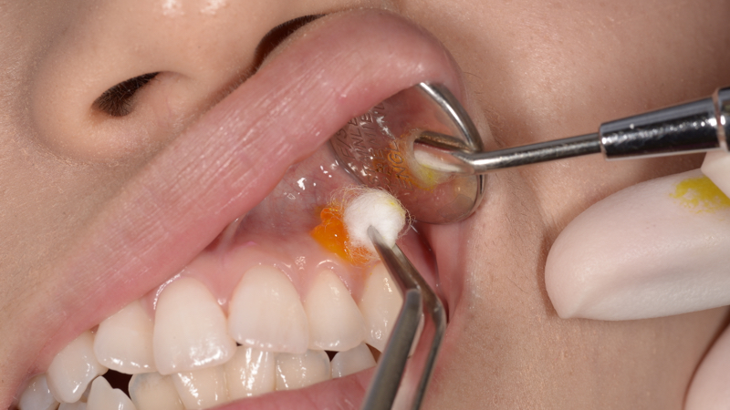
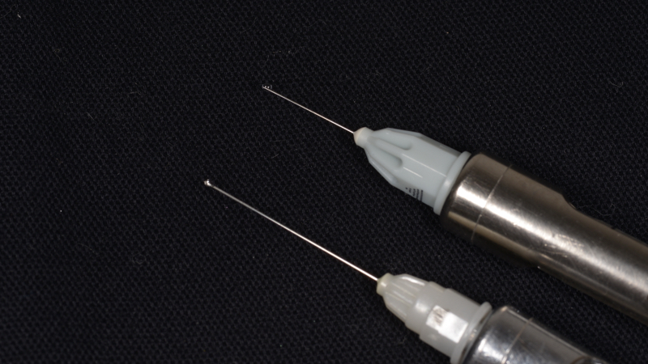
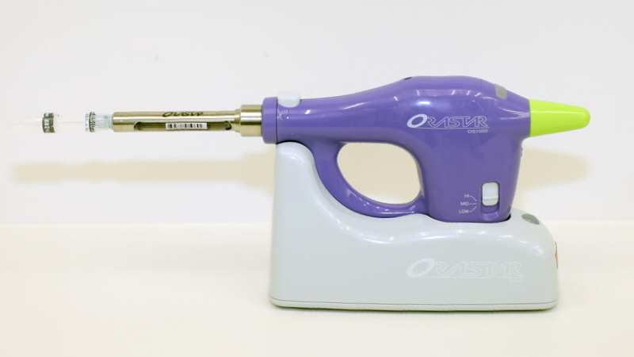

無痛治療
痛い治療は嫌ですよね？
虫歯、歯根の治療、被せ物、詰め物、入れ歯などの修復治療、抜歯、歯のクリーニングなど、歯に関することは、どんなことでもお任せください。
全ての治療において痛みのない治療を心掛けております。
当医院では以下のことに留意して麻酔を行っておりますので 麻酔も痛くありません。
1針を刺す前に表面麻酔をします

針を刺す部分（刺入部位）にゼリー状の麻酔を塗ることによって針を刺す痛みをできるだけ和らげることができます。
粘膜の方が痛みを感じる部分(痛点)が少ないので、最初の刺入部位は粘膜の方を選びます。表面麻酔をして殆ど無痛になっているのですが、更に痛みの出にくい場所を選びます。
2細い針を使うことで痛みをさらになくします

注射針にも色々種類があります。多くの歯科医は27ゲージの針を使って麻酔をしていると思いますが、当医院では、現在は33ゲージの極細針を使用しています。痛点を避けるという観点からいって、細い針であればあるほど、痛みは感じにくくなるのです。
麻酔液は、注入時の刺激を減らすため人肌ぐらいの温度に温めて使用します。
3麻酔液はゆっくり時間をかけて注入します

強い圧力をかけないと麻酔液を入れる事はできません。その強圧を一気にかけてしまうとそれだけで痛みが起こります。当医院では、なるべくゆっくり少しづつ麻酔液を注入します。また、必要に応じて、コンピューター制御の電動麻酔器を使用します。